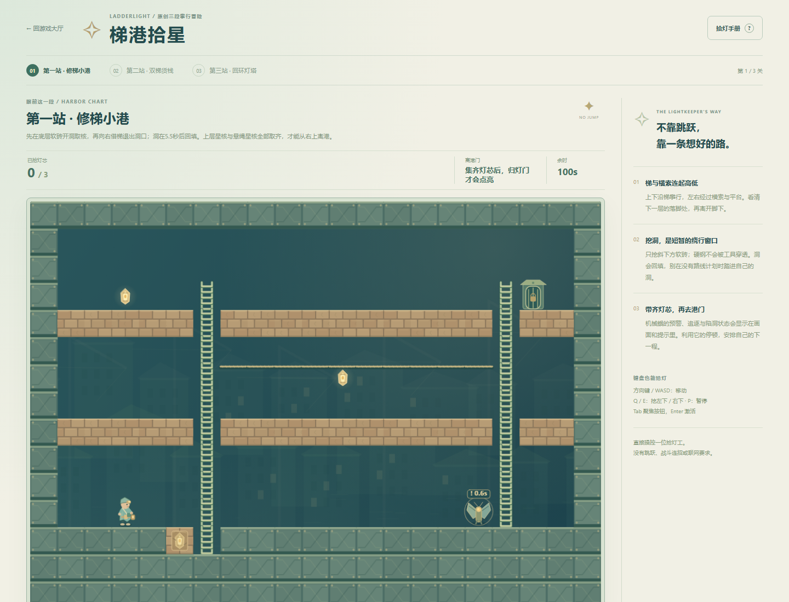
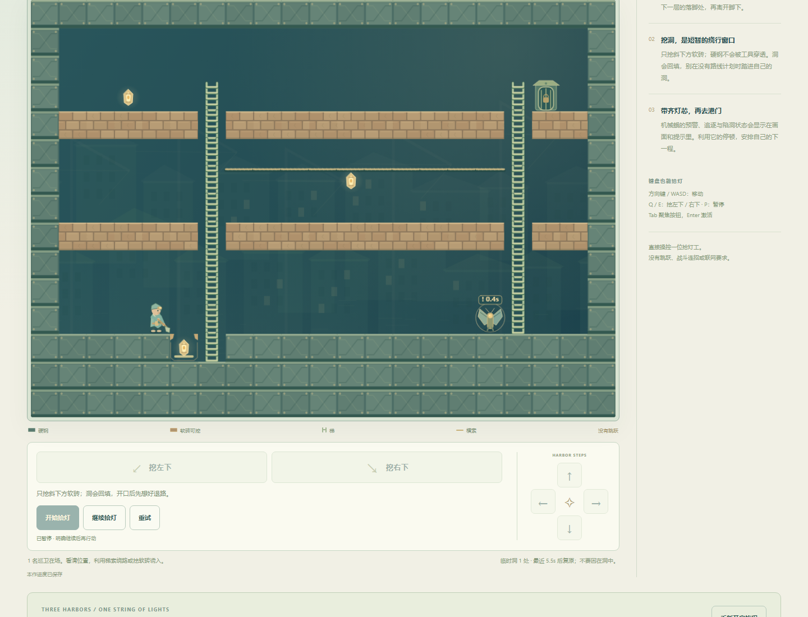
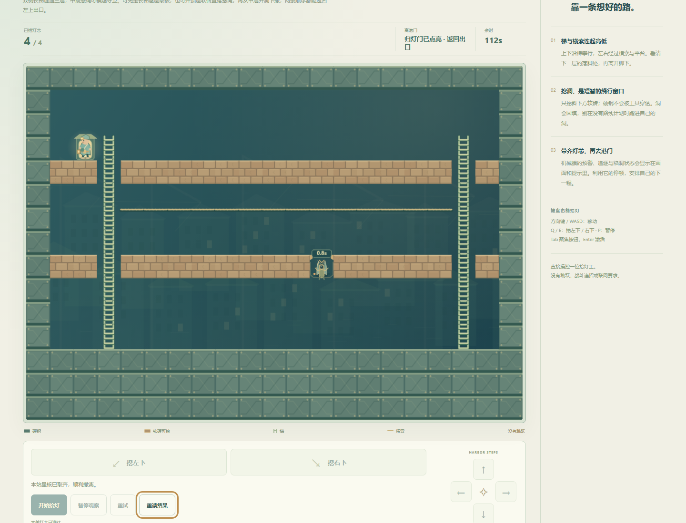
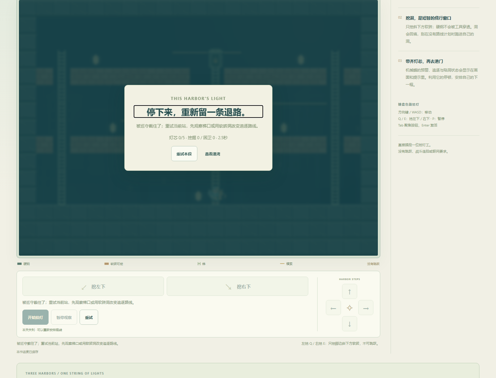
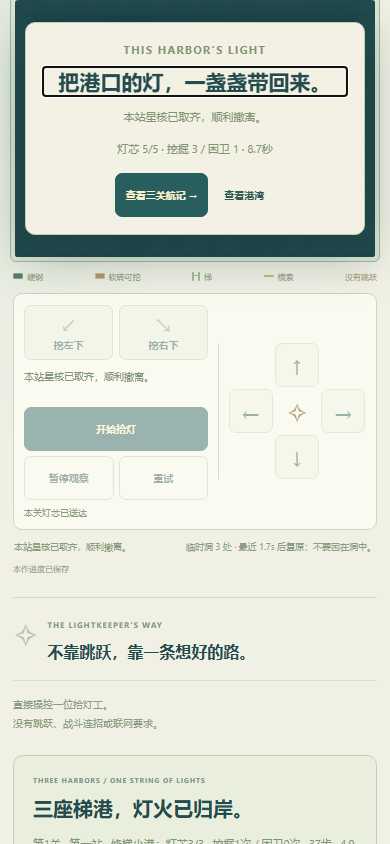
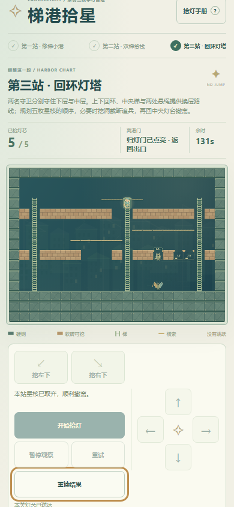
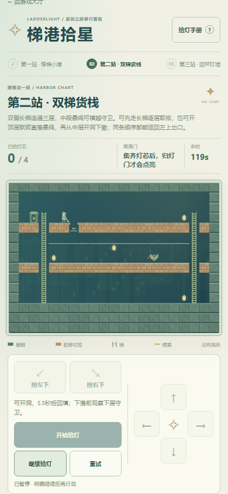

第45项独立原创三关首版，原44项、旧版和72条图鉴保留。参考本轮指定的Lode Runner式攀梯、临时挖坑与诱敌收集机制，非官方复刻；这个方向不在原72条清单中。全部人物、画面和地图原创，没有下载原版素材。
所有关卡同基础速度，无跳跃，无强制等待。洞5.5秒回填，巡卫回岗有可见整备，挖落与暂困使用同一真实地形。不是靠关数、固定动作数量或更长耗时证明深度。
Windows / Chromium147；原生方向键、Q/E和按钮，只读路线建议依据当前可见敌位。没有注入位置、胜负、时间或完成存档。第一次开洞后用普通P暂停做刷新核对，其余关未人为冻结规划。局内数值为结算时间；墙钟在开始按钮触发后采样，包含观测/暂停开销，起点不完全相同，不用这组数值推算性能或真人反应。
| 关 | 灯芯 | 步 | 挖洞 / 困卫 | 结算局内 | 辅助墙钟 |
|---|---|---|---|---|---|
| 1 | 3 | 37 | 1 / 0 | 4.94s | 5.250s |
| 2 | 4 | 60 | 2 / 1 | 8.06s | 8.047s |
| 3 | 5 | 66 | 3 / 1 | 8.74s | 8.782s |
第二关实际采用直落路线；第三关先尝试不看巡卫沿中央梯直下，2.50秒被截住。刷新保留失利，确认只重试第三关、前两关记录不变，之后完成左先行路线。完成档即时保留并刷新，结果与航记仍在；取消新旅程不清，确认才从第一关初态开始。
补充键盘检查发现390CSS关闭结果后焦点在屏外部分露出；已最小修正为把当前操作滚入最近可见范围，桌面/390重复关闭重读均通过，不重新结算或改规则。实际旧游戏v1/v2/v3存档字节不变。写失败/恢复、坏档保护为独立浏览器夹具；读失败另有单元测试，不冒充实际设备故障。
模型18次胜利（三关×两顺序×50/100/200ms），200ms完整累计为10个20ms子步；覆盖无效挖掘、无跳跃、提前到未开出口、自然被捕/埋洞、困卫回填、绳索、暂停及坏档拒绝。模型结构终态夹具和渲染姿态夹具只用于边界，不算普通UI通关。
质量级别：有完整循环和不同路线的原创三关首版候选。熟练辅助路线仍很短、地图小且确定，不能据18次模型胜利宣称深度或真人乐趣。未验真人无辅助趣味/难度、长线耐玩性、真实手机触控性能及审美；本作无音频。不以此承诺制作全部72款。
普通UI逐次决策 · 模型矩阵与失败 · 模型两种收集顺序 · 存储故障与真实终态复用 · 旅程6组 · 原44项与45项返回兼容 · 45项展开后原生返回与触控短验 · 明确渲染夹具 · 规则与范围
可重跑：node docs/ladder-qa/model.test.mjs、node docs/ladder-qa/journey.test.mjs、node docs/ladder-qa/catalogue.test.mjs。普通UI证据单列，不能由这些命令代替。







机制来源：Nintendo / Lode Runner Legacy官方介绍。核读收集逃脱、挖楼板和困敌机制；Tozai官网本轮工具不可读，未据其补写事实。没有新增年份/销量/评分主张，未转载图片。